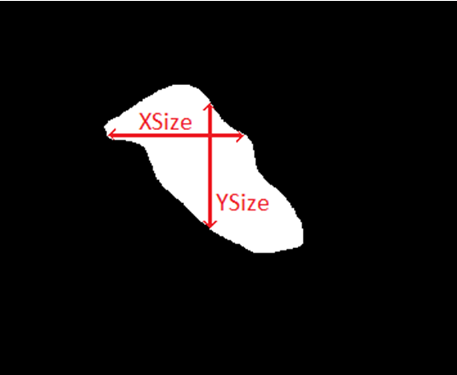
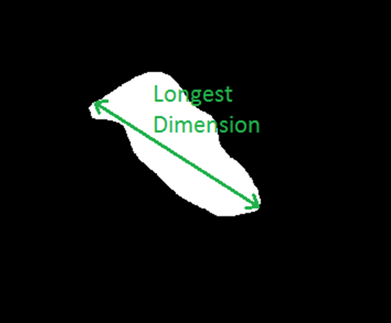

The following table lists all of the Defect List columns that are populated by an MDPAutoClassify run.
Column |
Description |
|---|---|
MDPAutoClassification |
This is the disposition code assigned to a defect. This code is obtained from a user-defined combination of classification codes from other tiers (for example, Defect Type and Source Type). The section “Defect Disposition” describes how to define the combinations. |
MDPAutoClassification Comment |
If the classification code is obtained from a custom combination of classification codes from other tiers, then this column displays the combination used to obtain this tier’s classification code. |
MDPAutoClassification Defect Type |
This is the classification code assigned to each of the blank defects. The section “Calibre MDPAutoClassify Supported Defect Types” provides details the classification codes used by the tool. |
MDPAutoClassification Defect Type Comment |
This consists of additional information associated with the blank defect, extracted by Calibre MDPAutoClassify. The section “Defect Classification Comments” provides details on the content this column. |
MDPAutoClassification Source Type |
This is the defect source type classification code assigned to each of the blank defects. The section “Defect Source Type Classification” describes the supported source types. |
MDPAutoClassification Source Type Comment |
For each defect, this column consists of additional information (primarily the defect ID) from previous inspections or occurrences, if any. |
MDPAutoClassification Defect Area (image pixels) |
This is the total area of the defect, as determined by Calibre MDPAutoClassify. It is measured in terms of image pixels over which the defect is spread. |
MDPAutoClassification Defect XSize (image pixels) |
This is the widest part of the extracted defect contour across all the horizontal cross-sections of the blank defect. It is measured in terms of image pixels. An example of Defect XSize measurement for an extracted defect contour is shown in the following figure. Figure 2. Defect
X-Size and Defect Y-Size
 |
MDPAutoClassification Defect YSize (image pixels) |
This is the longest part of the extracted defect contour across all the vertical cross-sections of the blank defect. It is measured in terms of image pixels. Refer to Figure 2 for an example of Defect YSize measurement. |
MDPAutoClassification Defect Longest Dimension (image pixels) |
This is the longest part of the extracted defect contour across all non-orthogonal cross-sections of the blank defect. It is measured in terms of image pixels. Refer to the following figure for an example of Longest Dimension measurement. Figure 3. Longest
Dimension
 |